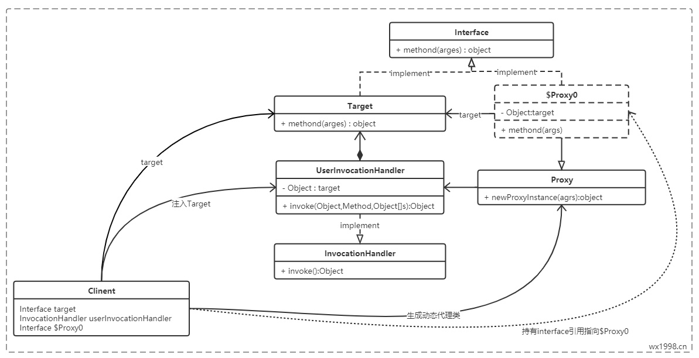

动态代理模式的理解以及使用

首先请移步文章《代理模式》了解静态代理模式
动态代理
什么是动态代理
动态代理就是，在程序运行期，创建目标对象的代理对象，并对目标对象中的方法进行功能性增强的一种技术。在生成代理对象的过程中，目标对象不变，代理对象中的方法是目标对象方法的增强方法。可以理解为运行期间，对象中方法的动态拦截，在拦截方法的前后执行功能操作。
动态代理对象
代理类在程序运行期间，创建的代理对象称之为动态代理对象。这种情况下，创建的代理对象，并不是事先在Java代码中定义好的。而是在运行期间，根据我们在动态代理对象中的“指示”，动态生成的。也就是说，你想获取哪个对象的代理，动态代理就会为你动态的生成这个对象的代理对象。动态代理可以对被代理对象的方法进行功能增强。有了动态代理的技术，那么就可以在不修改方法源码的情况下，增强被代理对象的方法的功能，在方法执行前后做任何你想做的事情。
本质
利用反射机制在运行时创建代理类。
如何理解
动态代理也是遵循 《代理模式类图》 中通用的代理模式类图关系，与静态代理相比:
- 具体代理类（$Proxy0）的生成是在运行期动态产生的，而非编译期就已经静态存在；
- 具体代理类（$Proxy0）与被代理类的代理关系（$Proxy0持有Target的引用），是Proxy想办法动态注入进入$Proxy0；
- 具体代理类（$Proxy0）对被代理类的功能的代理是在动态生成的代理类内部，是InvocationHandler想办法去动态的调用被代理类(Target)的对应方法的。
- 无论是具体代理类的动态产生，还是与被代理类的关系建立，以及对被代理类方法的代理调用，这中间，都用到了两个关键的中间媒介，即Proxy和InvocationHandler。
- Proxy类，其中提供了动态生成代理类的静态方法，并持有实现了InvocationHandler接口的引用。同时，所有生成的代理类也都是Proxy类的子类。
- InvocationHandler接口，只包含一个抽象出来的方法名：invoke，使得实现InvocationHandler接口的类去具体实现，在实现中通过持有被代理类实体（$Proxy0），并通过反射，去调用对应的实体方法。
因此，动态代理总体上的执行流程为
当客户端通过Proxy的静态方法生成动态代理类后，调用动态代理类对应的接口方法时，内部会调用其内部持有的InvocationHandler接口的实例对象的invoke方法，并得以调用到实际被代理实体的相应方法。
实现
- 接口
Person.java1
2
3
4public interface Person {
public void listenNumber(String number);
} - 真实角色
Foreigners.java1
2
3
4
5
6
7public class Foreigners implements Person {
public void listenNumber(String number) {
System.out.println("听到的是：" + number);
}
} - 代理角色
DynamicProxy.java1
2
3
4
5
6
7
8
9
10
11
12
13
14
15
16
17
18
19
20
21
22import java.lang.reflect.InvocationHandler;
import java.lang.reflect.Method;
import java.lang.reflect.Proxy;
public class DynamicProxy implements InvocationHandler {
private Person person;
public void setPerson(Person person) {
this.person = person;
}
public Object getProxy() {
return Proxy.newProxyInstance(this.getClass().getClassLoader(), person.getClass().getInterfaces(), this);
}
public Object invoke(Object proxy, Method method, Object[] args) throws Throwable {
Object invoke = method.invoke(person, args);
return invoke;
}
} - 调用者
Me.java1
2
3
4
5
6
7
8
9
10
11
12
13
14
15
16
17public class Me {
public static void main(String[] args) {
new Me().sayNumber("一");
new Me().sayNumber("二");
new Me().sayNumber("九");
}
public void sayNumber(String number){
Foreigners foreigners = new Foreigners();
DynamicProxy dynamicProxy = new DynamicProxy();
dynamicProxy.setPerson(foreigners);
Person person = (Person) dynamicProxy.getProxy();
person.listenNumber(number);
}
} - 结果
1
2
3听到的是：1
听到的是：2
听到的是：9
感谢查阅